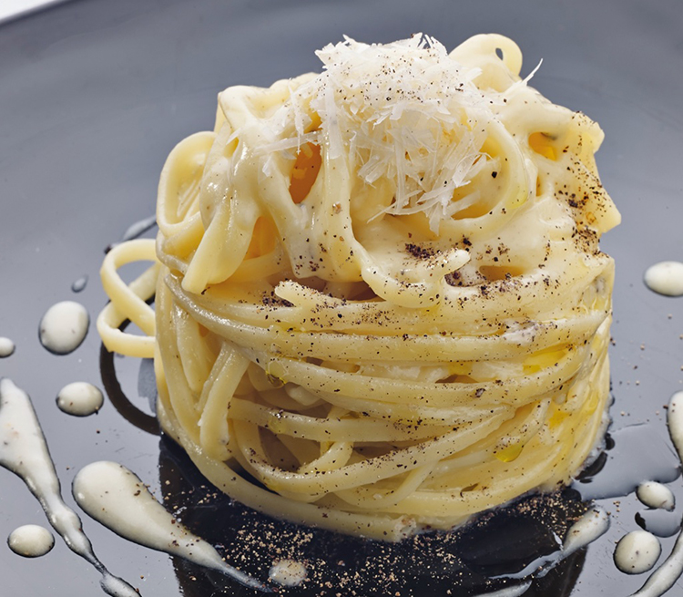

Cheese and Pepper Spaghetti

Cheese & Pepper Spaghetti with Piave DOP Vecchio Selezione Oro Cheese. Enjoy with a Glass of Garda DOC Sparkling Wine!
Piave DOP Vecchio Selezione Oro cheese (aged for more than 12 months) and Garda DOC sparkling wine come together as the perfect pairing in this take on a classic.
Directly translating to "cheese and pepper," cacio e pepe delivers a bowl of comfort made from simple pantry staples. Enjoy this rich and creamy pasta dish alongside
a fine glass of Garda DOC's sparkling wine.
Ingredients
- 400 grams of gragnano spaghetti
- 200 grams of Piavo DOP Veccio Selezione Oro Cheese
- 200 grams of peppered goats cheese
- Ground black pepper and salt to taste
- 10 centiliter extra-virgin olive olive
Instructions
- Grate the cheese into a bowl and add the extra-virgin olive oil, a pinch of salt, and two spoonfuls of water.
- Cook the pasta and then drain.
- Pour the cheese mixture into a pan.
- Mix the spaghetti into the mixture away from the heat until you reach just the right density and creaminess.
- Garnish with a dusting of black pepper and serve with a glass of Garda DOC sparkling wine
Return To Homepage
Previous Recipe
Next Recipe